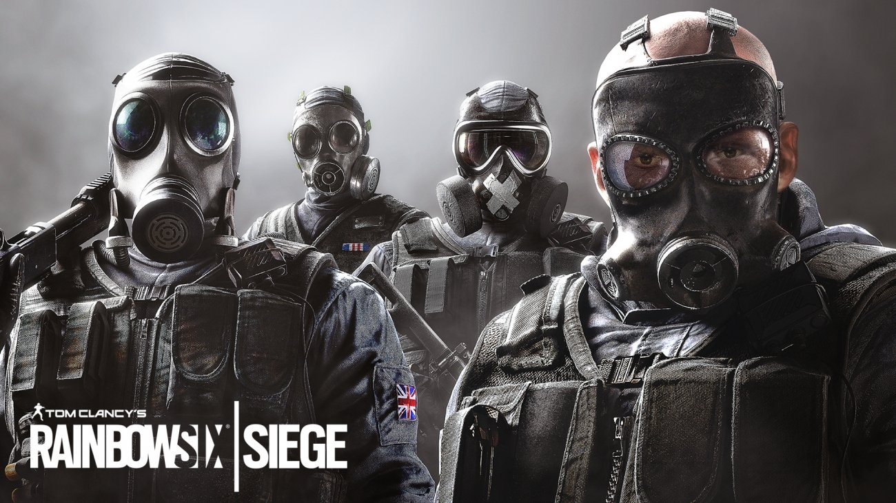

"Tom Clancy's Rainbow Six Siege (Tom Clancy's Rainbow Six Siege)" is produced by Ubisoft Montreal Studio, the latest work of a first-person shooting simulation series released by Ubisoft, and is the latest sequel to the "Rainbow Six" series . The player will act as a policeman or a gangster to conduct a humanity test and conduct a 5v5 duel. The plot is extremely tense, and every move affects whether the hostage can be rescued safely
Oct.11, 2020
Author: Junyu Chen